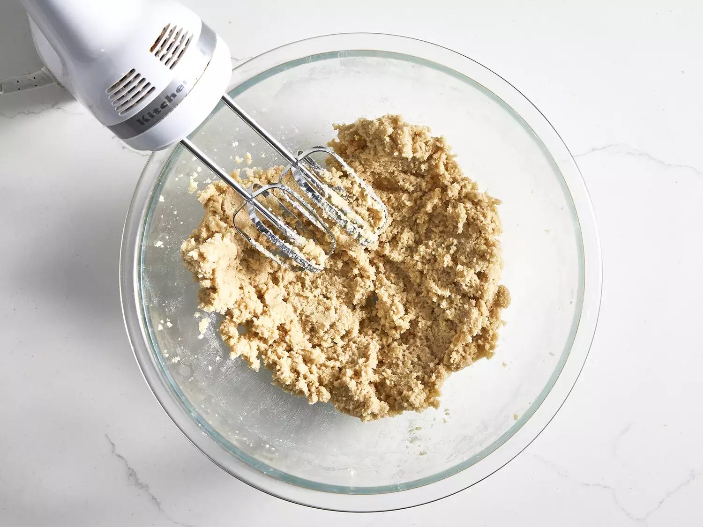
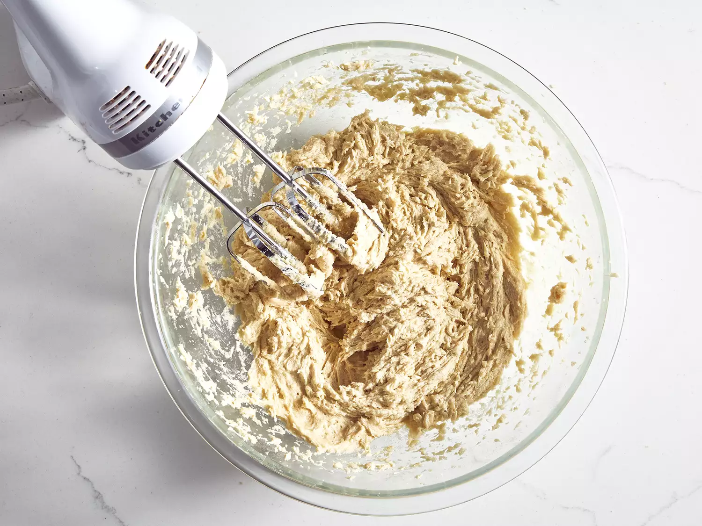
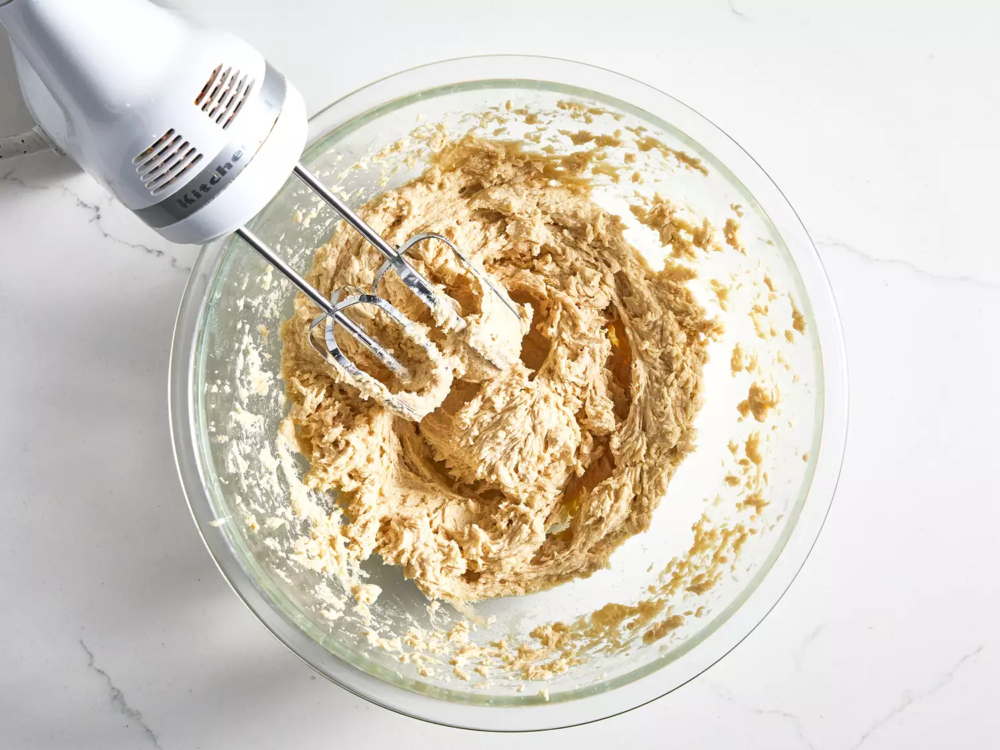
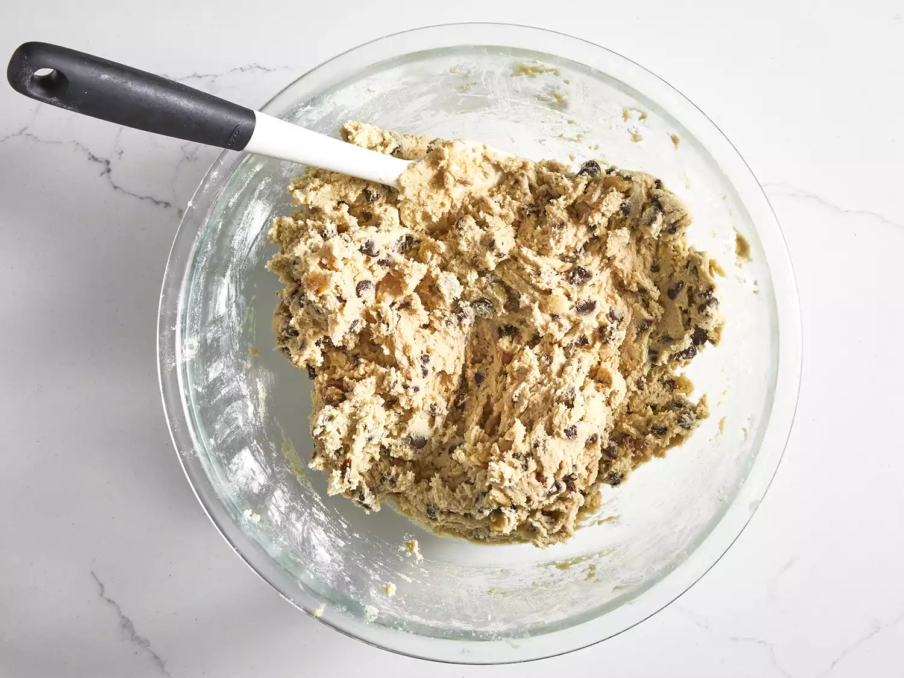
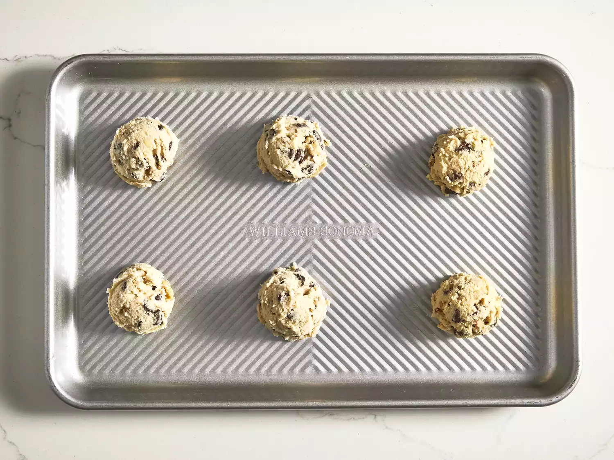
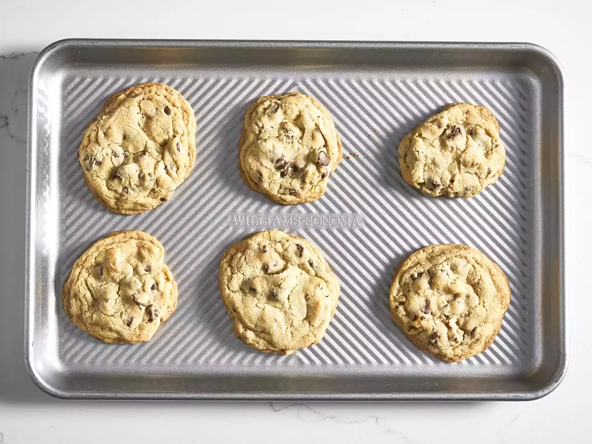
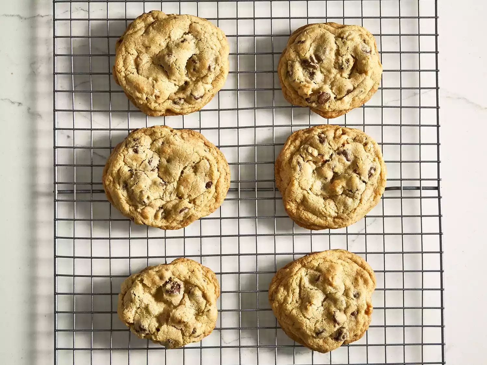

Chocolate Chip Cookies

How to Make Chocolate Chip Cookies
Chocolate chip cookies are a classic treat loved by many for their delightful combination of soft, chewy texture and rich chocolate flavor. You'll find a detailed ingredient list and step-by-step instructions in the recipe below, but let's go over the basics:
Chocolate Chip Cookies Ingredients
- Unsalted butter: Adds richness and flavor, contributing to the cookies' texture. It's usually softened for easier mixing.
- Eggs: Bind the ingredients together and add moisture, helping to create a soft texture.
- Vanilla extract: Adds a rich, sweet flavor that complements the chocolate chips.
- Granulated sugar: Sweetens the cookies and helps them spread during baking, resulting in a crisp texture.
- Brown sugar: Provides moisture and a deeper, caramel-like flavor due to its molasses content.
- Baking soda: A leavening agent that helps the cookies rise and become light and fluffy.
- Water: A bit of hot water creates steam as it bakes, working with the baking soda to puff the cookies up.
- Salt: Enhances the flavors of the other ingredients and balances the sweetness.
- Flour: All-purpose flour helps create gluten, which providing bulk and a chewy texture.
- Chocolate chips: The star ingredient, providing bursts of rich chocolate flavor. They can be semi-sweet, dark, or milk chocolate, depending on preference.
- Nuts (optional): Adds crunch and a nutty flavor to the cookies.
How to Make Homemade Chocolate Chip Cookies Step-By-Step
Follow this simple step-by-step guide to create classic homemade chocolate chip cookies with a chewy texture and rich chocolate flavor:
- Preheat the oven to 350°F (175°C). In a mixing bowl, cream together 1 cup of unsalted butter (softened), 3/4 cup of granulated sugar, and 3/4 cup of brown sugar until light and fluffy.

- Add 2 large eggs and 1 teaspoon of vanilla extract to the mixture and mix until well combined.

- Whisk together 2 1/4 cups of all-purpose flour, 1-2 tablespoons of hot water, 1 teaspoon of baking soda, and 1/2 teaspoon of salt.

- Fold in 2 cups of chocolate chips (and 1 cup of chopped nuts, if desired) until evenly distributed.

- Scoop tablespoon-sized portions of dough onto a baking sheet lined with parchment paper, spacing them about 2 inches apart.

- Bake in the preheated oven for 10-12 minutes, or until the edges are golden brown.

- Remove from the oven and let the cookies cool on the baking sheet for a few minutes before transferring them to a wire rack to cool completely.

- Enjoy your delicious chocolate chip cookies!